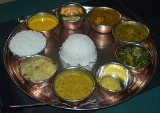

Definetly a place on earth.
Nepal is a place of many things, such as food, clothing, religion, and culture. Lets take a look at some examples by travelling there!
The first food is Dal bhat and is very common in nepal. Here is what it looks like:
Dal bhat is a traditional meal from the Indian subcontinent, popular in many areas of India, Bangladesh and Nepal. It consists of steamed rice and a cooked lentil stew called dal. It is a staple food in these countries. Bhat or Chawal means "boiled rice" in a number of Indo-Aryan languages.
The second food is Momos and this is what it looks like.

This is one of the favourites for tourists and is a must try for everyone visiting Nepal. Momos are small envelopes of white flour stuffed with veggies or minced lamb or chicken. They are served with different kinds of sauces and mayonnaise which makes the combination a delicious snack. This food in Nepal has taken India by storm and is a popular street food across many countries as well.